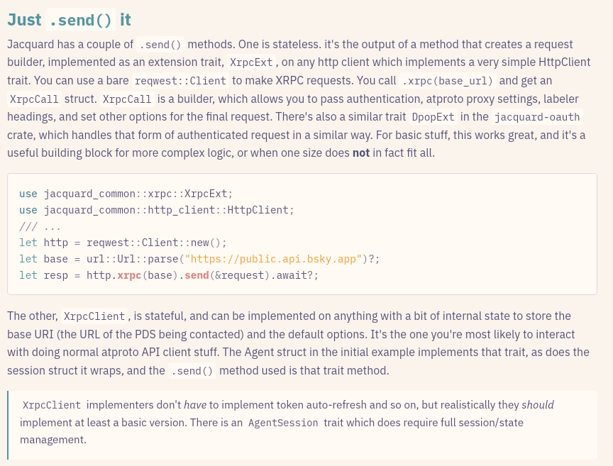

The namesake of what I'm building
The namesake of what I'm building
Or: "Get in kid, we're rebuilding the blogosphere!"
I grew up, like a lot of people on Bluesky, in the era of the internet where most of your online social interactions took place via text. I had a MySpace account, MSN messenger and Google Chat, I first got on Facebook back when they required a school email to sign up, I had a Tumblr, though not a LiveJournal. I was super into reddit for a long time. Big fan of Fanfiction.net and later Archive of Our Own.
Social media in the conventional sense has been in a lot of ways a small part of the story of my time on the internet. Because while I wasn't huge into independent internet forums, the broader independent blogosphere of my teens and early adulthood shaped my worldview, and I was an avid reader and sometime participant there. I am an atheist in large part because of a blog called Common Sense Atheism (which I started reading in part because the author, Luke Muehlhauser, was criticising both Richard Dawkins and some Christian apologetics I was familiar with). Luke's blog was part of cluster of blogs out of which grew the rationalists, one of, for better or for worse, the most influential intellectual movements of the 21st century, who are, via people like Scott Alexander, both downstream and upstream of the tech billionaire ideology. I also read blogs like boingboing.net, was a big fan of Cory Doctorow. I figured out I am trans in part because of Thing of Things, a blog by Ozy Frantz, a transmasc person in the broader rationalist and Effective Altruist blogosphere. One thing these all have in common is length. Part of the reason I only really got onto Twitter in 2020 or so was because the concept of microblogging, of having to fit your thoughts into such a small package, baffled me for ages. Amusingly I now think that being on Twitter and now Bluesky made me a better writer. Restrictions breed creativity, after all.
https://xkcd.com/345 2000s internet culture was weird
But through all of this I was never really satisfied with the options that were out there for long-form writing. Wordpress, even their hosted version, required a lot of setup to really be functional, Tumblr's system for comment/replies was and remains insane, hosting my own seemed like too much money to burn on something nobody might even read at the time, and honestly I felt like I kinda missed the boat on discoverability, as the internet grew larger and more centralised, with platforms like Substack eating what was left of the blogosphere. But at the same time, its success proves that there is very much a desire for long-form writing, enough that people will pay for it, and that investors will back it. There are thoughts and forms of writing that you simply cannot fit into a post or even a thread of posts, and which don't make sense on a topic-based forum, or a place like Archive of our Own. Plus, I'm loathe to enable a centralised platform like Substack where the owners are unfortunately friendly to fascists.
That's where the at:// protocol and Weaver comes in.
Weaver is designed to be a highly flexible platform for medium and long-form writing on atproto. I was inspired by how weaver birds build their own homes, and by the notebooks, physical and virtual, that I create in the course of my work, to ideate, to document, and to inform. The initial proof-of-concept is essentially a static site generator, able to turn a Markdown text file or a folder of Markdown files, such as an Obsidian vault or git repository documentation, into a static "notebook" site. The file is uploaded to your PDS, where it can be accessed, either directly, via a minimal app server layer that provides a friendlier web address than an XRPC request or CDN link, or hosted on a platform of your choice, be that your own server or any other static site hosting service. The intermediate goal is an elegant and intuitive writing platform with collaborative editing and straightforward, immediate publishing via a web-app. The ultimate goal is to build a platform suitable for professional writers and journalists, an open alternative to platforms like Substack, with ways for readers to support writers, all on the at:// protocol.

Weaver works on a concept of notebooks with entries, which can be grouped into pages or chapters. They can potentially have multiple attributed authors. You can tear out a metaphorical page or entry or chapter and stick it in another notebook. Technically you can do this with entries you don't control (i.e. entries in notebooks where you're not listed as an author), although this isn't a supported mode. You own what you write. And once collaborative editing is in, collaborative work will be resilient against deletion by one author, to some degree. They can delete their notebook or even their account, but what you write will be safe, and anything you've touched, edited, will be recoverable.
Entries are Markdown text. Specifically, they're an extension on the Obsidian flavour of Markdown, so they support additional embed types, including atproto record embeds and other markdown documents, as well as a two-column mode and resizable images. They will support Bluesky-based comments, but a Weaver-native system may come into the mix down the line. Currently you have to write notebook entries in an external editor and upload them. Ultimately there will be a web-based editor with live collaborative editing for those who prefer the WYSIWYG experience, intend to collaborate, or want an all-in-one option.
When I started working on Weaver back in the spring, the only real games in town for long-form blogging based on atproto, aside from rolling your own, piss.beauty style, were whtwnd.com and leaflet.pub. Leaflet's good, and it's gotten a lot better in the last year, but it doesn't offer quite what I'm looking for either. For one, I am a Markdown fangirl, for better or for worse, I love being able to compose stuff in a random text editor, paste it somewhere, and get a reasonably formatted, presentable, even pretty document out of it. And while Leaflet allows you to use Markdown for formatting, it doesn't speak it natively. Whitewind... There are more alternatives now, which makes sense as this space definitely feels like one that has gaps to fill. And the at:// protocol, while it was developed in concert with a microblogging app, is actually pretty damn good for "macro"blogging, too. The interoperability the protocol allows is incredible. Weaver's app server can display Whitewind posts very easily. With some effort on my part, it can faithfully render Leaflet posts. It doesn't care what app your profile is on, it uses the partial understanding capabilities of the jacquard library I created to pull useful data out of it.

The current state of Weaver is that proof-of-concept, described in the pitch. There's a command-line tool which can either parse a single Markdown file or a whole folder of them, either rendering them to HTML into a local directory, suitable for static site hosting, or, after doing some pre-processing, uploading them and any associated media to your PDS.
The static site path is largely independent of atproto. I wrote it both as sort of the ultimate fallback, and also because I wanted something to use to write docs that go up on GitHub Pages or similar, to turn an Obsidian vault full of documentation into a website without having to pay them a monthly hosting fee. The original v0.0.1 version of this I wrote a couple of years ago, though the current version is a complete rewrite. I forked the popular rust markdown processing library
pulldown-cmarkbecause it had limited extensibility along the axes I wanted, i.e. implementing custom syntax extensions to support Obsidian's Markdown flavour and adding some additional useful features
The second half of this is the minimal app server. This is strictly a viewer for the time being and currently has no active firehose or jetstream feed and does no persistent indexing, only time-limited caching of what is requested from it. In fact, it doesn't even use constellation or slingshot (though it probably should), purely fetching records from your repository. It caches blobs and re-serves them at a known relative url path, so that the link urls are reasonable and informative, and does the same for relevant records that are linked to by notebook entries requested from it.
The reason why I started with something developer-friendly rather than aiming for a non-technical audience to begin with is because I know that audience well, being one, and I figure it's far wiser to work out the kinks in the underlying implementation first with a user base capable of making a good bug report before trying for a broader audience.
As to why I'm writing it in Rust (and currently zero Typescript) as opposed to Go and Typescript? Well it comes down to familiarity. Rust isn't necessarily anyone's first choice in a vacuum for a web-native programming language, but it works quite well as one, and I can share the vast majority of the protocol code, as well as the markdown rendering engine, between front and back end, with few if any compromises on performance, save a larger bundle size due to the nature of WebAssembly. And ultimately I may end up producing Typescript bindings for Jacquard and Weaver's core tools, if that's something people value, or I end up reconsidering doing web front-end in Rust.
Weaver is therefore very much an evolving thing. It will always have and support the proof-of-concept workflow as a first-class citizen. That's part of the benefit of building this on atproto. If I screw this up, not too hard for someone else to pick up the torch and continue.